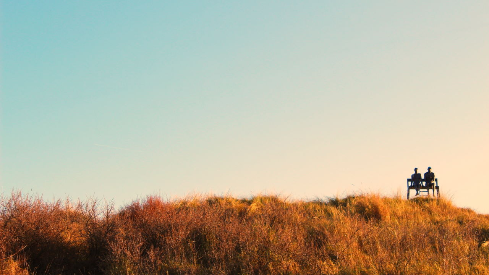

On making life easier
It is an biological inherent trait of living creatures to avoid pain and suffering. Pain and suffering is natural mechanisms to ensure survival. Ensuring we don’t eat what is bad for us, or don’t enact in activity that can hurt us and potentially be the death of us.
It is therefor natural behavior to seek less stress, less pain and less suffering on a personal level. You don’t care much about anyone else, your primary focus is on your self. You extend you consideration to those closest to you, as life experience and evolution have thought us that we will suffer, if everyone in the immediate surrounding (think: family/tribe) is is suffering. We reap happiness, from the happiness of others.
We used to be born into a harsh natural environment. No longer. We have technology and information, that have elevated our societies to be comfortable, to cover more or less all our desires and needs. But as everything in life, this increased comfort does come with a cost.
Removing some of this comfort, is not something most people want. The opposite is true: We want even more comfort.
Our desire for comfort, a life without pain and suffering, puts us on a journey into many areas of life. From the food we grow, make and eat, to the politics of herding humans around, philosophy, science and technology. We want the latest, and the best, of everything - cause we think it will give us greater comfort, less pain and less suffering.
Sometimes it is the pursuit and the desire, which gives us comfort - not the actual end result, which might be the latest Apple iPhone, not really better than the previous, but by believing we will have better life, we can easily fool our brain to accept this as something better, and it will trigger our reward system.
We can decide to use any number of tools to achieve more comfort. Some tools results in horrors for others.
Dictators have used their power to increase personal wealth and comfort, including those that is closest to them in their administration. They need supportive administration to survive, but it does come at a large cost for the rest of society.
Politicians use the same power to increase their own wealth and comfort, usually not as directly as a dictator can do, but they pursue their dreams and desires of the perfect society according to their wishes.
Politics is by definition, the use of force to achieve goals, and the use of force is by definition, achieving goals against the interests and will of others. There is no way around this problem.
Being able to use force, can be very effective. If you threaten someone, you are much more likely to achieve your wishes, than having to convince everyone to get on-board with your wishes.
This ultimately means that the use of politics, will result in human suffering. Cause some people will suffer from the goals of politics, while the (political) goal is ultimately to increase comfort.
We don’t have to use politics for this, we can rely on information, knowledge, science and technology.
That is why we are working to establish Liberstad, a private city based on voluntary human action. We believe that we can achieve increased comfort, without the use of force or politics.
For Liberstad to succeed, it must achieve greater comfort. Going back to the natural state, will give the individual full freedom, but will have very little comfort. We would have to fend off wild animals, violent criminals and other disasters and problems that is hard to handle, as individuals or small groups (family).
We believe that more comfort will be achievable without the use of force. We believe that the greatest comfort comes from individuals being free from threats of violence. We believe individuals gain better comfort from voluntary actions.
This means we must utilize other means to increase comfort for citizens. We can’t use force and politics. What we can use, is knowledge and experience gained through human history.
We can use science and technology to replace services that previously was provided by the government and public sector. We live in a time where technological advances so rapidly, that few is able to keep up. This is especially true for states, governments and laws.
The relevance of governments, are dissipating as cities are growing to become mega cities around the globe. Cities is becoming the highest point of organizational authority.
Technology have always replaced what we had before. There used to be devices that kids growing up today, will never know about, but was essential in the work place just a decade or two ago. The same replacement of services previously provided by the governments, will go away.
One of these technology that we are working on, is blockchain and distributed computer software. We launched the City Chain blockchain late in 2018, and have since then worked on the Smart City Platform, which is a distributed software that will be able to replace the government services.
A lot of work goes into the development of Liberstad, as Norway’s first private city, and the interest have been fantastic. If everyone that have pre-purchased properties moves to Liberstad, we already have a potential society of hundreds of citizens. As the place is developed, the potential is huge.
If you share a similar philosophy of voluntaryism, of freedom from oppression, we hope you will do your best to support and help the development of Liberstad, and similar projects around the globe such as Liberland, Fort Galt, The Seasteading Institute and more.
There are many ways you can contribute, like doing volunteering work, and provide financial donations, engaging in online forums, and generally spreading the philosophy of freedom.
Every single donation we receive, goes directly to the development of Liberstad. We have purchased equipment and tooling, rocks and material, but there are need for a lot more to improve the existing buildings and do further development.
In closing:
Socialism will always win against Capitalism, since Socialism have a better sales argument for the majority of people. Liberstad attempts to short circuit this, by avoiding the political spectrum completely and attempts to achieve a better future by using other means (than force) to organize the society.
If you have read all this way, I’d like to give an analogy that applies to the same natural behavior in humans. There is a major change going on in society today, it is still small but the momentum is growing: Plant based food.
We use force to every year produce and kill billions of animals. We do this to increase our comfort. While we have a long history and tradition of vegetarian lifestyle, the majority still consume animal produce. This has in large parts, been driven by the lack of good alternative solutions.
Food technology is changing this. We now have meat-replacements in form of vegetarian and vegan alternatives. It is technology that drives this, but the result is increase comfort and reduction of pain and suffering for billions of animals. Technology have already reduced the amount of farmers to the lowest ever in human history, technology will drive new innovations that will automate food production even further - and increase the taste and quality.
That is why I’m both an Voluntaryist and Vegan. I believe all interactions should be voluntary.
Published: 2022-01-21
Written: 2020-04-03
Sondre Bjellås
Photo: Milan De Clercq (@mdc_photography2000)